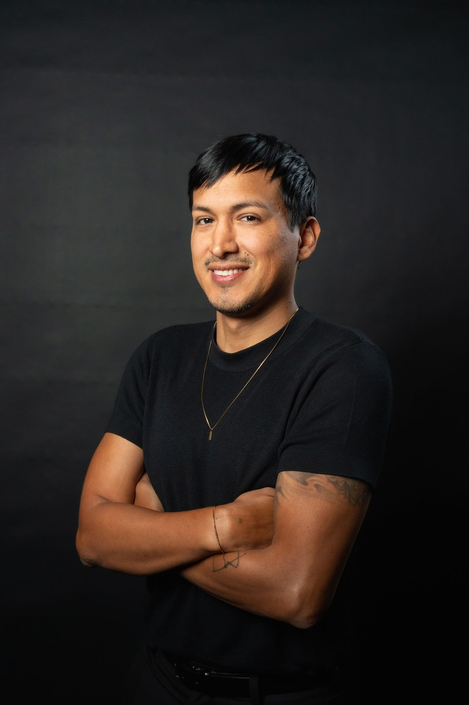

Videograf & Colorist
Kamera. Farbe. Ton.
Spezialisiert auf Videos, die für sich sprechen. So stärke ich die Marke jedes Unternehmens. Für Ergebnisse, die man nicht vergisst.
Showreel
Ein Blick in die Arbeit
Nische 01
Info-Reels
Talking-Head-Reels, die Vertrauen aufbauen und komplexe Themen verständlich machen.
Nische 02
Corporate & Events
Vom Live-Anlass bis zum Experten-Interview. Zwei Welten, ein Anspruch.
Der Look
Color Grading
Von Log zum Look. Im ACES-Workflow, dem Farbstandard aus Hollywood.

Über mich
Geboren in Peru, seit 2011 in der Schweiz zu Hause. Schon früh hat mich alles angezogen, was mit Kunst zu tun hat: Zeichnen, Malen, Tanzen, Musik. Alles, worin ich ausdrücken konnte, wer ich bin.
Seit 2021 arbeite ich als Fotograf und Videograf. Was als Hobby begann, wurde zu meiner grössten Leidenschaft und hat mir die Tür zu Unternehmen in der ganzen Schweiz geöffnet.
Dabei war ich immer auf der Suche nach dem, was ein Video wirklich ausmacht: das Zusammenspiel aus Bild, Farbe und Ton. Ich arbeite präzise und effizient, und der Kontakt mit Menschen ist für mich das Beste an diesem Beruf.
Wenn ich nicht am Rechner sitze, findet man mich im Gym, am See, draussen in der Natur oder bei meiner Familie.
Skills
- Videografie
- Fotografie
- DaVinci Resolve
- Color Grading
- Photoshop
- Lightroom
- Canva
- Ableton Live
- KI-gestützte Workflows
Ablauf
Von A bis Z
So läuft ein Projekt bei mir ab. Du weisst von Anfang an, woran du bist.
Kennenlernen
Ein kurzes Gespräch: Wer bist du, was brauchst du und was soll das Video erreichen?
Konzept
Aus deiner Idee wird ein Plan. Mit Referenzen, eigenen Vorschlägen und klarer Richtung.
Filming
Ich baue die Szenen, du sprichst. Um Bild und Ton kümmere ich mich.
Postproduktion
Schnitt, Color Grading, Stimme und Sound. Alles bei mir, ohne Zwischenstationen.
Lieferung
Beste Qualität, kleine Datei. Bereit für jede Plattform.
Auch als Freelancer verfügbar
Für Agenturen und Teams, die Verstärkung brauchen.